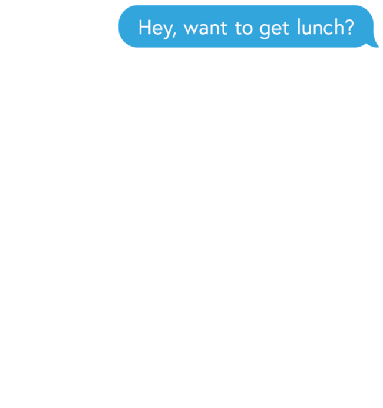

UPICK
Fresh to web development, we wanted to build an app that was unique and useful, that
encouraged us to dig deeper in foundational code, yet still gave us the freedom to be creative. So,
we decided to focus on a tiny daily problem and solve it.
DECEMBER 2018
HTML, CSS, Javascript/jQuery
ROLE: PROJECT MANAGER, FRONT-END DEVELOPER, UI/UX DESIGNER
DEMO
IDEA

We’ve all found ourselves stuck in this conversation too many times a day (especially
those of us who indulge in second dinner). uPick is a multi-player game created to pick for you!
uPick is specifically designed to take the
indecisiveness out of decision making. In
attempt to
wrap our minds around this seemingly never-ending conversation, we replayed it over and over again and
reflected on why we all just didn’t know where to eat. I then caught myself when I habitually
responded “I don’t know,” observed my in-the-moment thoughts, and found
that my mind immediately flooded with an overwhelming amount of options, causing it to freeze like an
overheating hard drive. So, we modelled the game to target this problem.
DESIGN CONCEPT
Of course, I had to draw inspiration from food. I used the aesthetic of childhood ice cream trucks to design
the main composition, then focused on the candy-like color palette to portray a fun and inviting feeling.
GAME PT. 1
The first layer of filtering down the options is programmed behind the scenes.
Before the game starts, uPick randomizes a list of 10 different
cuisines.
Up to 4 players enter the game via Google Firebase. Then, the
list of 10 cuisines are revealed on
screen.
Technology used: Google Firebase
As I continued to agonize over the root cause the conversation, I discovered that the answer
was hidden in it all along. We all don’t know where to eat; but, we
all knew exactly where we DID NOT want to eat. So, I translated directly into how the game works.
Each player takes turns to eliminate one cuisine from the list until
there is only one left.
GAME PT. 2
Once the players confirm the winning cuisine, uPick works its magic by hitting the Google Places API. The
players allow the app to use their location, then uPick returns a
list of restaurants filtered according to
winning cuisine in the form of a map on screen. From there, it’s just like Yelp. The players
click around
until they find a suitable restaurant; the game ends.
Technology used: Google Places API, Google Geolocation
FUTURE DEVELOPMENT
In further develoment, I would like to add in an extra layer of user filtering before the map displays the
results and allow them to select their price range or rating range. More importantly, I’d like to program a
technical filter that not only randomizes the list of generated cuisines but generates the list based on
cuisines near them (for example, if you are in an area with much more eastern food but, say, no Filipino or
Indian food within a certain mile radius, uPick automatically eliminates it from the list of cuisines that
it is randomizing from. I would also like to give the users an option to play the game with cuisines or with
restaurants, if they are in a location without an extended array of different types of food.